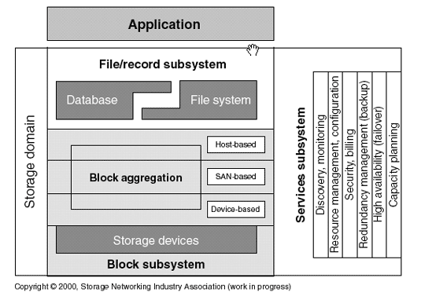
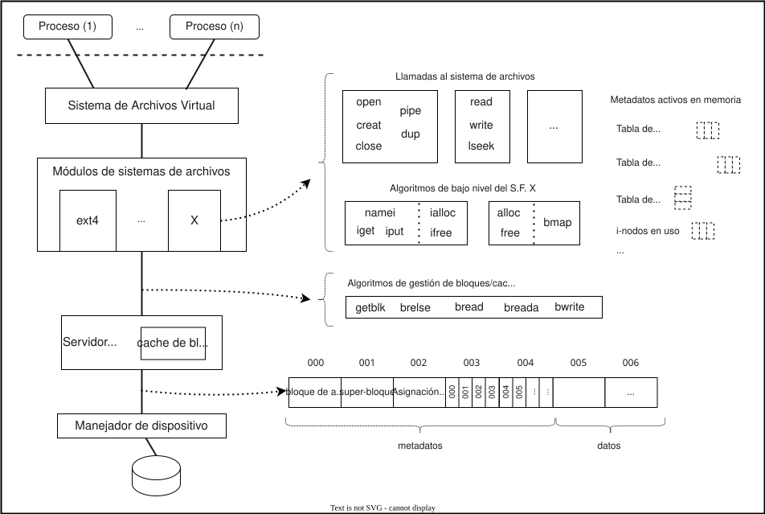
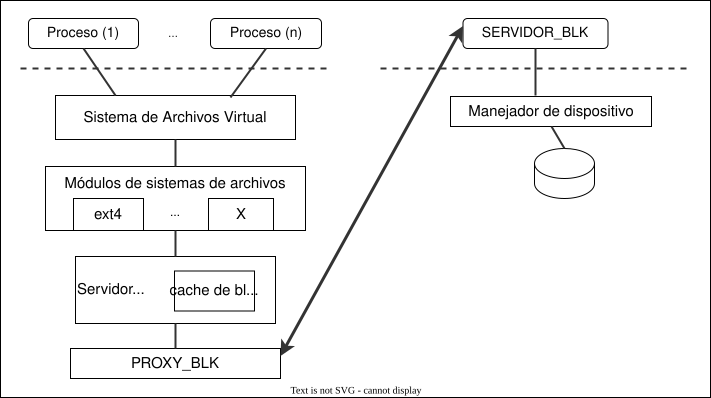
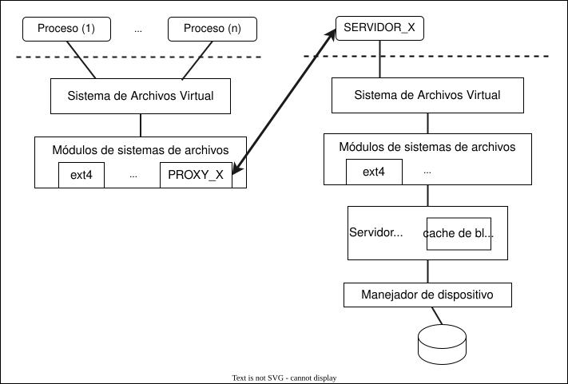
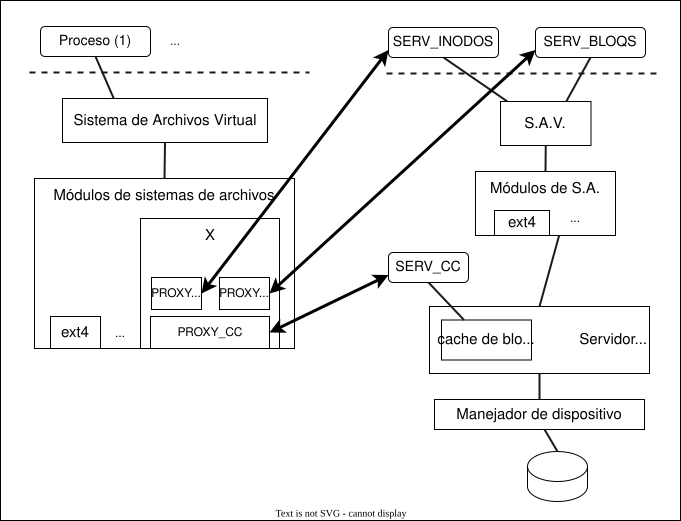
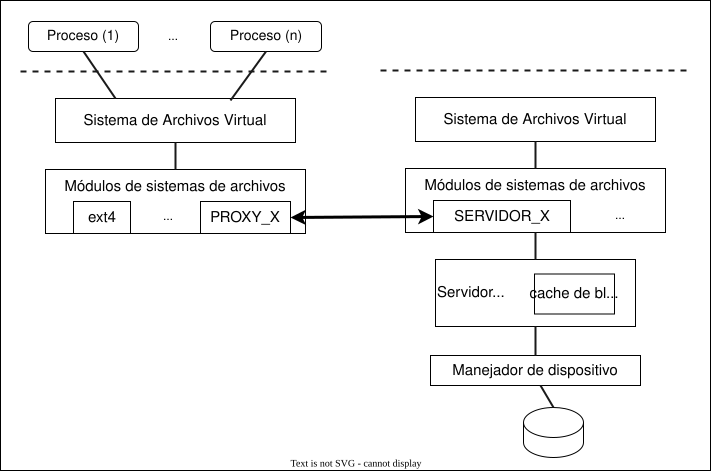

Sistemas de ficheros distribuidos
- Felix García Carballeira y Alejandro Calderón Mateos @ arcos.inf.uc3m.es

Contenidos
- Introducción a sistemas de ficheros distribuidos:
- Sistemas de almacenamiento distribuidos:
Sistema de ficheros
En una máquina Von Neumann, tanto los datos como el código de un programa ha de estar cargado en memoria principal para ejecutar:
flowchart TD A[CPU] <--> B(Memoria principal)A día de hoy hay dos tecnologías principales para el almacenamiento:
flowchart TD A[CPU] <--> B(Memoria RAM) B[Memoria RAM] <--> C(SSD, disco duro)- Memoria RAM
- Volátil (se pierde contenido si falta electricidad)
- Menor capacidad (orden de Gigabyte)
- Direccionamiento a nivel de byte
- Disco
- NO Volátil (permanente)
- Mayor capacidad (orden de Terabytes)
- Direccionamiento a nivel de bloque
- Memoria RAM
Problema:
- Que cada programador/a tengan que ocuparse de tratar con los bloques de disco para buscar en qué bloque están los datos que precisa su programa, recuperar o guardar datos de un bloque, etc.
Objetivo:
- En lugar de trabajar con bloques trabajar con una abstracción de datos intermedia de alto nivel que internamente se traduzca a bloques de manera que:
- Sea independiente del dispositivo físico.
- Ofrezca una visión lógica unificada.
- Sea lo suficientemente simple pero completa.flowchart TD A(Proceso)---|"(1) Abstracción de datos"|B("(2) Gestor de abstracción") B --- C("Disco<br>(b1, b2, ...)")
- En lugar de trabajar con bloques trabajar con una abstracción de datos intermedia de alto nivel que internamente se traduzca a bloques de manera que:
El sistema operativo integra una abstracción básica y genérica (ficheros y directorios) y hay un componente en el sistema operativo que es el gestor de dicha abstracción (sistema de ficheros).
flowchart TD A(Proceso)---|"ficheros y directorios"|B("sistema de ficheros") B --- C("Disco<br>(b1, b2, ...)")- Normalmente con la abstracción de ficheros y directorios que tiene el sistema operativo de serie es suficiente para el acceso habitual a los datos
- El propio sistema operativo usa dicha abstracción de ficheros y directorios para la gestión de sus componentes, lo que ayuda a demostrar su potencial.
- Aunque hay otras abstracciones, como una base de datos donde la abstracción se basa en el uso de tablas y hay un componente que es el gestor de dicha abstracción que es el gestor de base de datos.flowchart TD A(Proceso)---|"base de datos"|B("gestor BBDD") B --- C("Disco<br>(b1, b2, ...)")
- A día de hoy se trabajan con distintas abstracciones a la vez:
- Se pueden combinar el uso de abstracciones, por ejemplo en un gestor de canciones puede usar una base de datos para la gestión de autores, títulos, etc. y guardar en la base de dato el nombre del fichero donde está la propia canción.
- El sistema operativo habitualmente utiliza un sistema de ficheros específico pero ofrece varios sistemas de ficheros adicionales que es posible usar.
- La Storage Networking Industry Association (SNIA) propone el The SNIA Shared Storage Model:

- Donde una aplicación puede usar un gestor de base de datos, o bien un sistema de ficheros (o bien ambos, por ejemplo un reproductor de canciones con una base de datos con la información de las canciones del usuario y las propias canciones guardadas en archivos).
- Sería posible sistemas gestores de base de datos que usan ficheros por debajo y también sería posible sistemas de ficheros que usan bases de datos por debajo.
- Este subsistema de ficheros/registros utiliza por debajo un almacenamiento basado en bloques, donde los bloques pueden ser resultado de una agregación en tres niveles: dispositivo, SAN o host.
Para más información:
- Puede repasar de sistemas operativos el tema "sistema de ficheros (1/3)"
Funcionamiento básico de un sistema de ficheros
Un sistema de ficheros es un software de sistema que establece una correspondencia lógica entre los ficheros y directorios y los dispositivos de almacenamiento.
Funciones principales: organización, almacenamiento, recuperación, gestión de nombres, coutilización y protección de los ficheros.
- Relativo al almacenamiento y recuperación, ofrece un mecanismo de abstracción que oculta todos los detalles relacionados con el almacenamiento y distribución de la información en los dispositivos, así como el funcionamiento de los mismos.
- Relativo a la gestión de nombres, ofrece una traducción transparente entre el nombre de fichero usado por los programas basados en cadenas de caracteres (representación más cómoda para personas) a la representación numérica interna basada en el identificador de i-nodo donde internamente están los detalles del fichero.
Organización básica:
- Un dispositivo permite almacenar bloques de datos.
- Puede ejecutar
lsblkpara ver todos los dispositivos de bloque.
- Puede ejecutar
- En dicho dispositivo se pueden tener una o varias particiones o volúmenes. Las particiones o volúmenes permiten dividir de forma lógica un dispositivo físico en espacios de almacenamientos con los que trabajar.
- Puede ejecutar
cat /proc/partitionspara ver todas las particiones reconocidas.
- Puede ejecutar
- Por cada partición o volumen se tiene formateado con un sistema de ficheros en disco, que son las estructuras de datos que precisa en disco para localizar la información.
- Cada sistema de ficheros en disco permite trabajar con ficheros y directorios.
- Un fichero es una abstracción en la que el contenido de un archivo se trabaja como una secuencia de bytes.
- Un directorio es una colección de ficheros agrupados por algún criterio de el/la usuario/a.
- Importante: en UNIX/Linux un directorio permite asociar el número de i-nodo al nombre de un fichero.
- Si ejecuta
ls -i1se puede ver tanto los nombres como los número de i-nodos del directorio actual.
- Un dispositivo permite almacenar bloques de datos.
Operaciones básicas:
- Crear el sistema de ficheros (
mkfs): crea en una partición o volumen un sistema de ficheros vacío. Reserva parte del almacenamiento para guardar las estructuras de datos que posteriormente permiten la gestión de la información en disco (metadatos en disco). - Montar (
mount): añade el árbol de directorio contenido en un sistema de ficheros a un directorio de un árbol ya montado. - Desmontar (
unmount): quita el árbol de directorio de un directorio de montaje, volviendo a poder acceder al contenido inicial de ese directorio.
- Crear el sistema de ficheros (
Arquitectura básica de un sistema de ficheros
Repasando la arquitectura general de un sistema de ficheros, tenemos:

- Servidor de ficheros/archivos virtual:
- Proporciona interfaz de llamadas de E/S.
- Independiente de sistema de ficheros particular.
- Módulo de organización de archivos:
- Transforma peticiones lógicas en físicas.
- Distinto para cada sistema de ficheros particular.
- Servidor de bloques:
- Gestiona las peticiones de operaciones de bloques sobre dispositivos.
- Mantiene una caché de bloques o páginas.
- Manejador de dispositivo:
- Transforma peticiones de bloques en peticiones de dispositivo.
- Servidor de ficheros/archivos virtual:
En dicha arquitectura general, el software está organizado por capas, de forma que las capas superiores usan la funcionalidad de las capas inferiores para implementar su funcionalidad.
Las principales capas de software son:

- La caché de bloques tiene las siguientes operaciones habitualmente:
- getblk: busca/reserva en caché un bloque (a partir de un v-nodo, desplazamiento y tamaño dado).
- brelse: libera un bloque y lo pasa a la lista de libres.
- bwrite: escribe un bloque de la caché a disco.
- bread: lee un bloque de disco a caché.
- breada: lee un bloque (y el siguiente) de disco a caché.
- Los algoritmos de bajo nivel son:
- namei: convierte una ruta al i-nodo asociado.
- iget: devuelve un i-nodo de la tabla de i-nodos y si no está lo lee de memoria secundaria, lo añade a la tabla de i-nodos y lo devuelve.
- iput: libera un i-nodo de la tabla de i-nodos, y si es necesario lo actualiza en memoria secundaria.
- ialloc: asignar un i-nodo a un fichero.
- ifree: libera un i-nodo previamente asignado a un fichero.
- bmap: calcula el bloque de disco asociado a un desplazamiento del fichero. Traduce direcciones lógicas (offset de fichero) a físicas (bloque de disco).
- alloc: asigna un bloque a un fichero.
- free: libera un bloque previamente asignado a un fichero.
- Las llamadas al sistema de archivos son las habituales en el estándar POSIX:
- open
- write
- read
- close
- Etc.
- La caché de bloques tiene las siguientes operaciones habitualmente:
Para más información:
- Puede repasar de sistemas operativos el tema "sistema de ficheros (3/3)"
- Dispone de un ejemplo de un mínimo sistema de ficheros de ejemplo en nanofs
Posibles opciones para almacenamiento remoto
- A la hora de hacer remoto el acceso a los datos en un sistema de ficheros, tenemos varios puntos en la arquitectura donde podemos aplicar un patrón de software proxy para pedir la funcionalidad a una máquina remota.
- Entre las principales opciones (puede haber más opciones o mezcla de opciones) se tiene:
| Opción | Figura | Ejemplo: |
| Acceso remoto a dispositivos de bloques que están en otras máquinas |
 |
DRBD |
| Acceso remoto a los servicios de sistema de ficheros del sistema operativo en otra máquina |
 |
NFS |
| Acceso remoto a servicio de directorio (i-nodos), a servicio de bloques y servicio de coherencia de caché |
 |
Sprite |
Sistema de ficheros distribuido
De forma muy general, un sistema de ficheros distribuidos (DFS) es un sistema de ficheros que permite el acceso a ficheros de múltiples máquinas a través de una red de interconexión haciendo posible a múltiples usuarios de múltiples máquinas compartir ficheros (y por tanto, recursos de almacenamiento).
Los requisitos de un sistema de ficheros distribuido son:
- Transparencia:
- Mismas operaciones para acceso locales y remotos
- Imagen única del sistema de ficheros
- Eficiencia.
- Un SFD tiene sobrecargas adicionales: red de comunicación, protocolos, posible necesidad de realizar más copias, etc.
- Tolerancia a fallos:
- Replicación, funcionamiento degradado, etc.
- Facilidad de crecimiento (escalabilidad)
- Eliminar los cuellos de botella
- Consistencia
- Actualizaciones concurrentes
- Seguridad
- Transparencia:
Un sistema de ficheros distribuido busca que para los programas clientes su comportamiento sea similar a un sistema de ficheros local, ofreciendo "transparencia" en una serie de aspectos:
- Transparencia de acceso: los programas cliente no conocen que los ficheros están distribuidos en otras máquinas, trabaja con los ficheros como si fueran locales.
- Transparencia de localización: los programas cliente utilizan nombres de directorios y ficheros que no incluyen la localización explícita de dichos ficheros en el sistema distribuido.
- Heterogeneidad: los programas cliente y los servidores de ficheros distribuidos pueden ejecutarse en diferentes tipos de hardware y sistemas operativos.
- Transparencia de concurrencia: si varios programas cliente acceden a un mismo fichero del sistema de ficheros distribuido, las modificaciones se han de ver de alguna forma coherente.
- Transparencia de fallo: cualquier programa cliente de un fichero distribuido debería de poder trabajar aún en presencia de fallos en la red o en el servidor.
- Servidores con estado: cuando se abre un archivo el servidor almacena la información de la sesión de trabajo y devuelve al cliente un identificador único de dicha sesión de trabajo para posteriores operaciones.
- V: operaciones más cortas y oportunidades de optimización en el servidor.
- I: Es preciso guardar el estado del servidor para en caso de fallo poder recuperarlo.
- Servidor sin estado: cada operación es autocontenida (nombre del fichero, posición actual de trabajo, etc. va en cada operación).
- V: recuperación ante fallos más sencilla al no conservar estado el servidor.
- I: Aunque no son necesarios el open y close, el resto de operaciones tienen más campos.
- Servidores con estado: cuando se abre un archivo el servidor almacena la información de la sesión de trabajo y devuelve al cliente un identificador único de dicha sesión de trabajo para posteriores operaciones.
- Transparencia de replicación: los clientes no deben de preocuparse por la replicación en distintos servidores que pueda realizarse por parte del sistema de ficheros distribuidos para mejorar la tolerancia a fallos y escalabilidad.
Habitualmente las capas software usadas se basan en el uso de un patrón proxy a nivel de sistema de ficheros:
Servidor a nivel de usuario Servidor integrado en el Kernel 
Pero también se puede aplicar el patrón proxy a los tres elementos de la capa inferior de software:
- Servicio de directorio (para traducir de nombre lógico a identificador único de i-nodo)
- Servicio de bloque o chunck (para pedir los bloques del fichero)
- Servicio de coherencia de caché (para mantener la coherencia de las caché en los clientes y en los servidores)
Servicio de directorio
- Servicio de directorio: se encarga de la traducción de nombres de usuario a Identificadores de ficheros únicos (UFID)
- Ej.: En UNIX/Linux de nombre de fichero a identificador de i-nodo
- Los UFID permiten obtener los atributos de los ficheros (metadatos)
- Directorio: relaciona de forma única nombres de fichero con UFID
- Dos opciones:
- Los directorios son objetos independientes gestionados por un servidor de directorios (SD)
- Los directorios son ficheros especiales -> se tiene servidor de ficheros y de directorios combinados
- Operaciones básicas de un servicio de directorios:
Lookup(dir, name) -> FileId Busca un nombre en un directorio AddName(dir, name, FileId) Añade un nombre (name, FileId) a un directorio RemoveName(dir, name) Elimina una nombre de un directorio GetNames(dir) -> ListName Devuelve los nombre de un directorio - Resolución de nombres:
- Dirigida por los clientes:
- Ejemplo: NFS
- Dirigida por los servidores:
- Resolución iterativa:
- El cliente envía el nombre al SD
- El SD realiza la traducción hasta que termina en un componente que pertenece a otro SD
- El SD envía el resultado al cliente, el cual si no ha terminado la traducción continúa con el SD correspondiente
- Resolución transitiva:
- Los SD implicados contactan entre si para llevar a cabo la traducción. El último SD devuelve la traducción al cliente
- Rompe el modelo cliente/servidor (no adecuado para RPC)
- Resolución recursiva:
- El último SD implicado devuelve el resultado al anterior y así sucesivamente hasta que el primero responde al cliente
- Resolución iterativa:
- Dirigida por los clientes:
Servicio de ficheros
- Servicio de ficheros: se encarga de la gestión de los ficheros y del acceso a los datos
- Aspectos relacionados:
- Semántica de coutilización
- Métodos de acceso
- Caché de bloques
- El problema de la coherencia de cache
- Métodos para mejorar el rendimiento
- Operaciones básicas de un servicio de ficheros:
ReadFile(FileId, pos, n) -> Data Lee n bytes a partir de una determinada posición WriteFile(FileId, pos, n, Data) Escribe n bytes (Data) a partir de una determinada posición Create(name) -> FileId Crea un nuevo fichero de longitud 0 bytes Delete(FileId) Borra el fichero GetAttributes(FileId) -> Attr Devuelve los atributos de un fichero SetAttributes(FileId, Attr) Modifica los atributos de un fichero - Semánticas de coutilización:
- Sesión: serie de accesos que realiza un cliente entre un open y un close
- La semántica de coutilización especifica el efecto de varios procesos accediendo de forma simultánea al mismo fichero
- Semánticas más usadas:
- Semántica UNIX
- Semántica de sesión
- Semántica de ficheros inmutables
- Semántica de transacciones
Servicio de caché de bloques
- Es posible emplear una caché de bloques:
- V: el empleo de caché de bloques permite mejorar el rendimiento:
- Explota el principio de proximidad de referencias
- Proximidad temporal
- Proximidad espacial
- En lecturas adelantadas: mejora el rendimiento de las operaciones de lectura, sobre todo si son secuenciales
- En escrituras diferidas: mejora el rendimiento de las escrituras
- Explota el principio de proximidad de referencias
- I: no es fácil mantener la coherencia si hay multiples modificaciones.
- El problema surge cuando se coutiliza un fichero en escritura:
- Coutilización en escritura secuencial: típico en entornos y aplicaciones distribuidas.
- Si no se actualizan todas las copias al cierre: open (A) + write (A) + close (A) + open (B) + read (B):
- Si se actualiza al cierre PERO se usa escritura diferida: open (A) + read (A) + write (A) + close (A) + open (B) + read (B):
- Coutilización en escritura concurrente: típico en aplicaciones paralelas.
- Si hay escritura concurrente: open (A) + open (B) + read (A) + read (B) + write (A) ... B ya no está actualizado
- Coutilización en escritura secuencial: típico en entornos y aplicaciones distribuidas.
- El problema surge cuando se coutiliza un fichero en escritura:
- Localización de las caché en un sistema de ficheros distribuido:
- Caché en los servidores:
- Reducen los accesos a disco en el servidor
- Caché en los clientes:
- Reducen el tráfico por la red
- Reducen la carga en los servidores
- Mejora la capacidad de crecimiento
- Dos posibles localizaciones dentro del cliente:
- En discos locales
- V: Más capacidad,
- V: No volátil (facilita la recuperación)
- I: Más lento
- En memoria principal
- V: Más rápido
- I: Menor capacidad
- I: Memoria volátil (se pierde si se apaga la máquina)
- En discos locales
- Caché en los servidores:
- Soluciones para la coherencia:
- No emplear caché en los clientes.
- No utilizar caché en los clientes para datos compartidos en escritura (Ej.: Sprite).
- Mecanismos de caché sin replicación de datos.
- Empleo de protocolos de coherencia de caché.
- Aspectos de diseño a considerar en protocolo de coherencia de caché:
- Granularidad del protocolo
- Mecanismo de validación
- Mecanismos de actualización/invalidación
- Localización de las copias en las caches de los clientes
- Aspectos de diseño a considerar en protocolo de coherencia de caché:
- Ejemplo de coherencia en Sprite:
- Características:
- Sistema de ficheros desarrollador en Berkeley a finales de 1980
- Implementa consistencia secuencial
- Solo se almacena en caché los datos, no los metadatos
- Para identificar los bloques obsoletos se utiliza dos elementos:
- Número de versión para el fichero
- Identificador del último escritor
- Funcionamiento general:
- Compartición con lectores concurrentes (CLC)
- Escenario:
- Un fichero se abre por varios clientes para lecturas
- Ocurren lecturas concurrentes
- Acciones:
- El servidor detecta CLC -> mantiene lista de tuplas {cliente ID, Lectura}
- El servidor notifica a cada cliente al abrir que use cache
- El servidor también utiliza cache
- Cuando un cliente cierra el fichero, se mantiene cache
- Escenario:
- Compartición con escrituras concurrentes (CEC)
- Escenario:
- Un fichero se abre por varios clientes
- Al menos un cliente abre para escritura
- Ocurren escrituras concurrentes
- Acciones:
- El servidor detecta CEC al abrir para escritura
- El servidor notifica a todos los clientes que no usen cache -> todos los accesos se hacen directamente en el servidor
- El servidor serializa las peticiones de los clientes
- Cuando no haya clientes escritores -> se notifica de usar caché de nuevo
- Escenario:
- Compartición con escrituras secuenciales (CES)
- Escenario 1:
- Un fichero se abre por un cliente 1, se escribe y se cierra
- En cache cliente 1 los datos más recientes (no en servidor)
- A continuación se abre por un cliente 2
- El cliente 2 copia los datos antiguos desde el servidor -> problema 1
- Un fichero se abre por un cliente 1, se escribe y se cierra
- Escenario 2:
- Un fichero se abre por un cliente 1, se escribe y se cierra
- Un fichero se abre por un cliente 2, se escribe y se cierra
- A continuación se abre por un cliente 3
- El servidor no tiene las últimas escrituras -> problema 2
- Acciones:
- El servidor detecta CES al abrir para escritura
- El servidor lleva la pista de el último escritor: "lastWriter"
- El servidor lleva la pista de la última versión: "version"
- Se incrementa "version" cada apertura para escritura en cliente
- El servidor pide al último escritor que le mande la última versión
- El servidor detecta CES al abrir para escritura
- Escenario 1:
- Compartición con lectores concurrentes (CLC)
- Características:
- V: el empleo de caché de bloques permite mejorar el rendimiento:
Para más información:
- Puede repasar el artículo "scale and performance in distributed file systems"
Sistema de ficheros paralelo
- Se añade paralelismo a la forma de trabajar el sistema de ficheros distribuido.
- Paralelismo en el servidor:
- Ej.: Una aplicación de un proceso puede acceder a los datos de distintos servidores en paralelo.
- Paralelismo en clientes:
- Ej.: Varias aplicaciones de un proceso cada una pueden acceder cada una a sus datos en paralelo.
- Paralelismo tanto en cliente como en servidor:
- Varias aplicaciones ejecutando en paralelo acceden cada una de ellas en paralelo a los datos guardados en varios servidores.
- En una aplicación paralela formada por varios procesos se puede desde cada proceso acceder en paralelo a los datos guardados en distintos servidores.
- Paralelismo en el servidor:
- Múltiples nodos de E/S -> Incrementa el ancho de banda
- Fichero distribuido entre diferentes nodos de E/S con acceso paralelo:
- A diferentes ficheros
- Al mismo fichero
- Se añade interfaces de E/S paralela
- MPI-IO
- Optimizaciones:
- E/S colectiva
- Acceso a datos no contiguos
- Ejemplos:
- GPFS
- OrangeFS